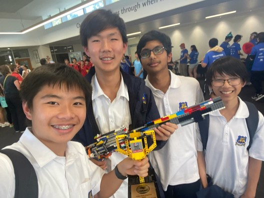
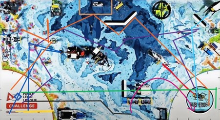

Team ►
Venkat Lanka: Group Captain & Coder
Kevin Li: Builder & Robot Game Planner
Kang Wei Pean: Innovations & Engineer (Website)
Jonathon Hart: Innovations & Engineer (3D Modelling)
Xander Hart: Innovations (PowerPoint)
Zachary Ng: Innovations (Research & Prototyping)
Schedule ►
Week 4:
- Create and code a minimum of 4 tasks for robot game
- Have innovation problem and basic solution along with basic research
- Build gear attachments for different actions and enhancement of robot
Week 5:
- Create and code at least 4 tasks for robot game
- Develop solution/innovation for problem and start making PowerPoint + model (optional)
- Keep everyone up to date on what’s going on and make them aware of the other sections of the game that they do not specialise in
- Create logo for shirts
Week 6:
- Refine the code of the 8 tasks done so far by trial and error
- Do at least 3 new tasks
- Have PowerPoint ready and rehearsed
- Make sure everyone knows what they are doing
Robot Game (Robot Approach Methods): ►
M01 - Coral Nursery
- Use extended frame attachment to hand coral tree support within the holder
- Flip up the coral buds using a wedge (Passive Attachment)
M02 - Shark
- Use drop box to hit yellow tab and get shark not touching the mat anymore.
- Use frame (Passive Attachment) to place shark into the oval
M03 - Coral Reef
- Collect reef segments with drop box then move them out of home area by moving them slowly as they stand.
- Flip coral reef up using flat lever.
M04 - Scuba Diver
- Use lever to pick up scuba diver
- Use lever to place Scuba diver onto coral reef support
M05 - Angler Fish
- Pull back yellow part to latch angler fish into boat using hook (Passive)
M06 - Raise The Mat
- Use wedge to lift mast up
M07 - Kraken Treasure
- Put a hook in between the wedge to drag the treasure out of the Kraken
M08 - Artificial Habitat
- Use passive attachments to flip the habitats
M09 - Unexpected Encounter
- Move robot into the yellow tab and retrieve it either using drop box or the robot itself
M010 - Send Over The Submersible
- Use a lever to lift the tab up and move submersible to other side
M011 - Sonar Discovery
- Use passive attachments to flip up the whales; could be achieved by hitting the biscuit in the centre.
M012 - Feed The Whale
- Use passive attachment that, when collided, opens a bottom hatch, releasing krill into the whale.
M013 - Changing Ship Lanes
- Flip up the boat using wedge and motor or use gears to lift the boat to the other side in an arc.
M014 - Sample Collection
- Use drop box to collect water sample
- Use drop box to collect water sample
- Use hook (Passive Attachment) to collect plankton sample
- Use passive attachment to push out trident
M015 - Research Vessel
-
Pull boat into home area,
load with samples, treasure
and trident,
then move using bot and passive attachment
Codes ►
Code 1 - Red
Code 2 - Yellow
Code 3 - Turquoise
Code 4 - Teal
Code 5 - Green
Code 6 - Blue
Code 7 - Grey
Code 8 - Pink
Code 9 - Violet
Code 10 - Black
Code 11 - Gold
Code 12 - Maroon
Robot Game Documentation (Strategy & Approach) ►
Strategy 1
Before Round Starts (20 Points)
- Place all attachments, aligners and robot in one launch area to receive equipment inspection bonus
- Give necessary attachments to other launch area
- Attach drop box and release attachments to robot
- Align robot by eyeballing the correct direction it needs to go to hit the Unexpected Encounter yellow push tab.
Run 1: Red (20 Points)
- Move robot forward 20cm at 90% speed
- Move robot backwards 25cm at 90% speed
Run 2: Purple (45 Points)
- Attach rubber lever attachment to the robot.
- Align the robot using a jig.
- Move the robot 30cm to collect coral segments and krill.
- Turn the robot 90 degrees right using gyro code.
- Move the robot 10cm forward to collect krill.
- Move the rubber lever down to trap kelp sample.
- Turn the robot 150-160 degrees left using gyro code, which passively pulls out the kelp sample.
- Move the robot forward 30cm.
- Turn the robot 30-45 degrees left using gyro code.
- Move the robot forward 5-10cm.
- Turn the robot 90 degrees right using gyro code.
- Move the robot forward 20cm, latching the angler fish inside passively.
- Turn the robot 85 degrees left using gyro code.
- Move the robot forward 10cm, collecting water sample, krill, and coral segment.
- Turn the robot 90 degrees left using gyro code.
- Move the robot forward 5-10cm.
- Make the release attachment drop the drop box, making the box fall due to gravity and trapping everything collected, except the kelp sample, inside.
- Turn the robot 90 degrees left using gyro code.
- Move the robot forward at 90% speed until the technician stops it when the entire robot is in the red launch area.
- Detach drop box and release attachments, then collect coral segments, krill, and samples.
Run 3: Yellow (15 Points)
- Quickly attach hook lever to the robot.
- Align the robot using a jig.
- Put all three coral segments in front of the robot, touching the front and upright.
- Move the robot 5-10cm forward, placing the coral segments outside the mat.
- Lower the hook lever 90 degrees down.
- Move the robot backwards until the boat is pulled back into the home area.
- Move the boat aside within the home area and attach wedge passive attachments to the robot.
Run 4: Dark Blue (85 Points)
- Align the robot using a jig.
- Move the robot 30-45cm forward.
- During the run, let one technician start loading the samples into the boat and loading the krill into the krill drop attachment.
- Turn the robot 75-90 degrees right using gyro code.
- Move the robot forward 15cm, lifting the mast and latching onto the treasure.
- Move the robot backward 30cm, flipping the coral buds up.
- Move the robot forward 15cm.
- Turn the robot 75-90 degrees left using gyro code.
- Move the robot backwards until the whole robot is in the home area.
- One technician takes the treasure chest piece from the robot and places it into the boat while the other detaches the wedge passive attachments and attaches the rubber lever and axle lever.
Run 5: Orange (N.A)
- Align the robot using a jig.
- Position the axle lever to scuba diver height.
- Position the rubber lever to face straight up.
- Move the robot 30cm forward.
- Turn the robot left 90 degrees using gyro code.
- Move the robot 15-20cm forward, having the scuba diver ring in between the two axles on the axle lever.
- Move the axle lever, at 40-50% speed, 60 degrees up to pick up the scuba diver.
- Move the rubber lever 180 degrees downward at 90-100% speed, hitting the yellow tab of the shark mission and releasing the shark from the cave.
- Move the rubber lever 180 degrees upward at 90-100% speed.
- Move the robot 15-20cm backwards.
- Turn the robot 45 degrees right using gyro code.
- Move the axle lever 55 degrees down slowly.
- Move the robot 5-10cm forward, putting the scuba diver ring around the new hanger.
Abandoned Mission Strategy 1 due to the realisation that it will not work as axle will be on the far left of the coral station hence the scuba diver won’t be able to be put onto the new hanger.
Innovation ►
What Is Coral Bleaching
- A coral's response to stressful conditions.
- Coral expels tiny algae from its tissues, resulting in a loss of color.
- It occurs when corals become white due to the loss of symbiotic algae they rely on.
Facts
- 5 times the great barrier reef has experienced a mass bleaching event since 2016
- 71% of the world’s coral reefs have likely experienced coral bleaching
- 14% of the world coral has been lost from 2009 to 2018
Why Does Coral Need Bacteria
- The zooxanthellae that reside in the coral supply nutrients to the coral through photosynthesis.
- They get energy from the sun and use water and carbon dioxide to create oxygen.
- Their main role is supplying the coral with sugars and proteins, the products of photosynthesis.
Causes
- Coral bleaching is caused by stress being put on the coral, causing the algae to be expelled
- Stress caused by:
- Heat
- Climate change cause marine heat waves
- A change as little as 1 degree Ceclsius can cause coral bleaching
- Solar
- Climate change cause marine heat waves
- A change as little as 1 degree Celsius can cause coral bleaching
- Pollution
- Excess nutrients from agricultural runoffs
- Causes algae bloom and eutrophication
Heatwaves
- Heatwaves can last weeks, months or even years
- When maximum and minimum temperatures are unusually hot over 3 days
- If ocean temperatures remain high for eight weeks or longer the coral cannot recover and begins to die
- If a large heatwave hits the reef, it will be in great danger
Effect On Marine Life
- Provide shelter, spawning grounds and protection
- A lot of animals that live in reef are organisms eaten by larger animals hence being irreplaceable parts of ecosystem
Effect On Humans
- Corals naturally absorb force of waves and storm surges keeping many safe Reef tourism
- Overfishing crisis heightened
Solution Prototypes ►
Prototype 1

- This was our first design. It was drawn by Zach, and we all reviewed it after.
- This consisted of a heat sensor which was brought to the bottom of the reef using a weight.
- This would transmit the information of the heat and sensors to the surface to floats.
- These floats hold fans which spin at a rapid pace, hence generating sea foam.
- We decided not to use this design, because of the wire in the way; if it breaks, we will lose all communication with the device.
- The fans on the float could also be dangerous for marine life.
Prototype 2

- This was an improvement on the previous prototype
- Instead of heat sensors, we designed a small, self-driving robot to an analyse the conditions
- It consists of heat sensors to measure the heat of the area
- In addition, it also has a camera for data collection on reef
- The seafoam producer however wasn't efficient and was just big and bulky, and our idea of ejecting pre-made seafoam wouldn't work
- Apart from this we removed the cable and it will now communicate wireless
Prototype 3

- This was a major improvement on the previous prototype.
- This was drawn by Kang and Zach.
- Jonathan and Xander gave feedback.
- We improved the floats by making them more spherical, and we went back to the old design of fans to generate sea foam, but this time inside the bot and ejecting it out the sea foam
- The 'Gup-V' is the same
- We have anchors for the floats so that they stay in place
Prototype 4

- For this last prototype, we just added hooks to the anchors to further lock in place
- We neatened up the design sketch
- The wires to the anchor are made of steel so they won't break
Robot Documentation ►
Part 1 – Run One:
Uses a gear system to move a piece to hit the yellow button. It uses a 20-tooth gear and 2 black four knob wheels to transfer the energy.


Part 2 – Run One:
It is a Dropbox and attachment for releasing it. It is used for the shark mission and collecting. The first 2 images are of the attachment that releases the Dropbox, the 3rd and fourth are the actual Dropbox.


Part 3 – Run Three:
Used for the artificial habitat. It is a passive attachment.


Part 4 – Run Two:
For the coral nursery and lifting the coral stick. It uses lots of beams and 2 axle connectors to lift the coral tree.


Pre-Frame Robot [1] ►


Pre-Frame Robot [2]


Testing ►